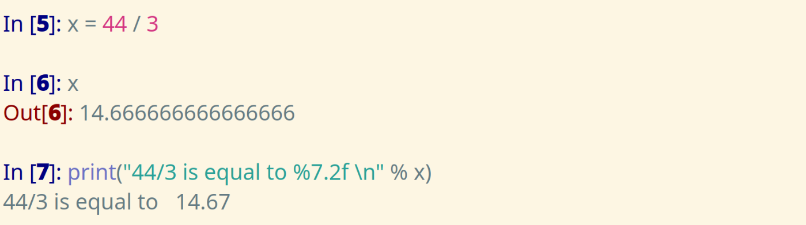
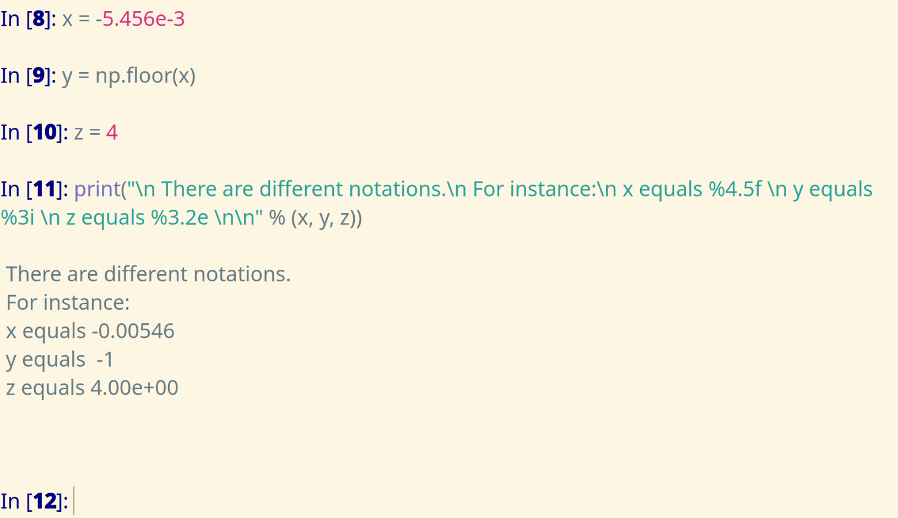
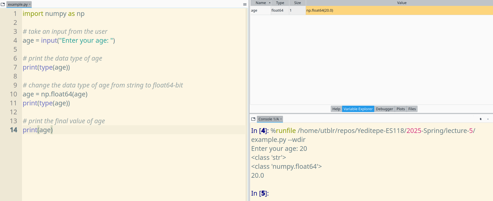

Let's break it down:
x is calculatedx is displayed in the terminalprint function
% must have character for the specifier7 is the minimum width of the output (including the digits, the decimal point, and spaces)2 is the number of the fractional digits. separates the whole, and the fractional digitsf is for the fixed-point notation\n is the *newline character% separates the string, and the given variablesx is the variable that is substituted with %7.2fLet's write 12 using different formats
| notation | format | result |
|---|---|---|
| integer | %5d |
___12 |
| fixed-point | %5.4f |
12.0000 |
| scientific | %5.4e |
1.2000e+01 |

input() function is utilizedThe input value has to be converted to a numerical data type by:
np.float16(), np.float32(), np.float64()or
np.int16(), np.int32(), np.int64()etc.

Being able to